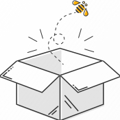

<div class="main">
  <div class="search-bar">
    <app-search></app-search>
  </div>
  <div class="content">
    <app-card *ngFor="let task of activeTasks" [task]="task"></app-card>
    <mat-divider *ngIf="activeTasks.length"></mat-divider>
    <app-card *ngFor="let task of completedTasks" [task]="task"></app-card>
    <mat-divider *ngIf="completedTasks.length"></mat-divider>
    <app-card *ngFor="let task of deadTasks" [task]="task"></app-card>
    <mat-divider *ngIf="deadTasks.length"></mat-divider>

    <div class="empty" *ngIf="empty">
      
      <p>Seems like there are no tasks...</p>
    </div>
  </div>
</div>
